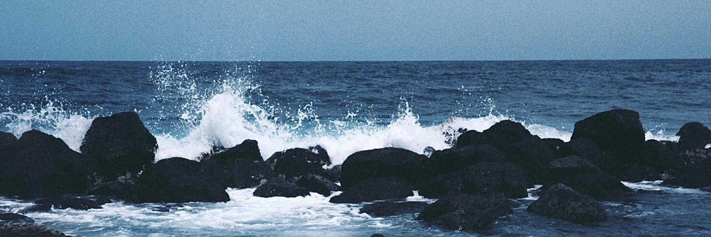

CANARIAS IN SEPTEMBER
In September, I visited the Canarias to rest and breathe, carrying my analog camera. The island's tranquility enveloped me, influencing my photography profoundly. Each click captured serenity...
I TRAVELLED FOR A BREATH
AND I FOUND MORE THAN THAT...

Discovering more than peace, I found inspiration and transformation. My photos mirrored this journey, evolving from mere images to an intimate visual project, encapsulating newfound emotions.

IN CANARIAS' SEPTEMBER CALM, MY ANALOG LENS TRANSFORMED SERENITY INTO AN INTIMATE VISUAL JOURNEY